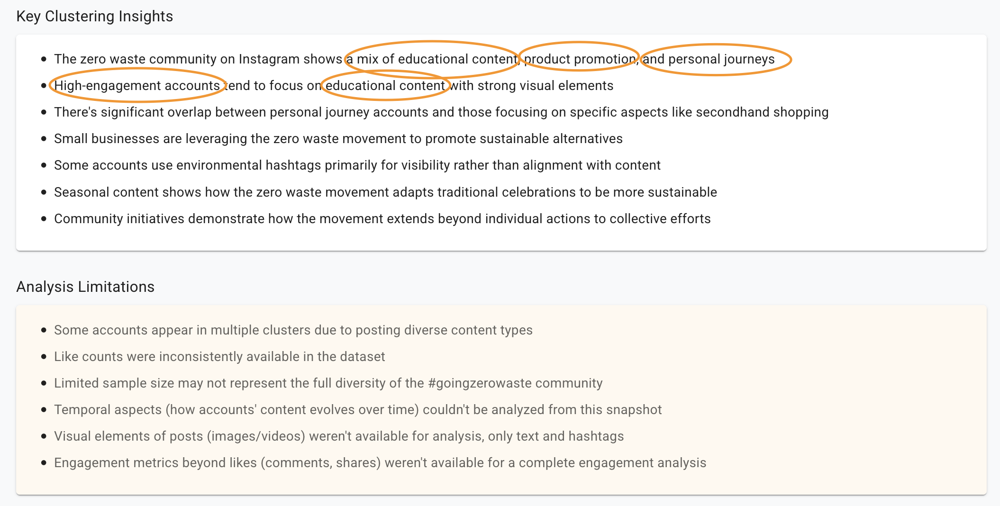

Leveraging Generative AI for Social Media Content Creation
A Practical Approach
Introduction
Generative AI (GenAI) revolutionizes marketing and content creation, especially in social media, by enabling rapid, personalized, and scalable content generation that drives engagement and innovation.
What is Generative AI?
What is it?
AI that creates new content – text, images, videos, music, audio (IBM Research, 2023)
Common AI tools for marketing:
-
Text: ChatGPT, Claude
-
Images: DALL·E, Midjourney
-
Video: Sora, VEO, KlingAI
-
Audio: Sunoo, Udio
-
Why is it such a transformative technology?
- Consistency & Speed: Content that took hours to create is generated in seconds
- Enabling: Non-experts can create engaging content without specialized training
- Mining Unstructured Data: Social media posts, comments, and images become actionable
- Text as Interface: Natural language replaces complex tools and workflows
GenAI and Social Media
Step-by-Step Content Creation
- Understand audience: Demographics and psychographics → personas for target groups, social listening
- Generate Targeted Content: Based on audience insights and personas
- Publication: Strategic scheduling and targeting across platforms
- Monitoring & Optimization: Track performance, sentiment analysis, continuous improvement
Case Study:
Step 1: Understanding Audiences
Data Collection & AI Applications
- Follower Analysis: Demographics, interests, engagement patterns
- Content Mining: Related hashtags, topics, and trends
- AI-Powered Insights:
- Automated clustering of audience segments
- Persona generation from social data
- Identifying content preferences by segment
Example Prompt:
I need you to analyze and cluster the following {context} into meaningful groups.
Please identify {num_clusters} distinct clusters or segments based on content, themes, style, or
other relevant factors.
Here's the data to cluster:
{data}
For each cluster, please provide:
1. A descriptive name
2. A concise description of what makes this cluster unique
3. Common characteristics shared by items in this cluster
4. A list of usernames or items that belong to this cluster
Step 1: Sample Insights:

Step 2: Generation
Content Creation Strategies
- AI-Powered Drafting: Generate content tailored to each audience segment
- Multiple Variants: Create options for A/B testing
Key Benefits
- Efficiency: Weeks of content in hours
- Consistency: Maintain brand voice
- Human Oversight: AI assists, humans refine
Example Prompt:
For the brand {brand} with the following description {brand_description}
create 3 alternative Instagram posts promoting the following idea: {idea}
to a group with the following description and properties: {cluster_description}
Make sure to follow the following brand-guidelines: {brand_guidelines}
Return the proposals as json, including suggestions for an image or video that could accompany this, text that could be spoken or as subtitles added, and audio that could be used for the video.
Format your response using the following JSON structure and nothing else:Step 2: Sample
Step 3: Generate Media
Media Creation Options
Example Prompt:
For the brand {brand} with the following
description:
{brand_description}
And this Instagram post:
{post_text}
Create detailed image descriptions that:
1. Appeal to the {audience_segment} audience
2. Follow these brand guidelines: {guidelines}
3. Evoke themes of {themes}
4. Include these key visual elements: {elements}
For each image, provide:
- Visual composition description
- Mood and lighting
- Color palette
- Suggested overlaid textStep 3: Results
üå± Small steps, BIG impact! üå±
Did you know that the average person generates about 4.5 pounds of trash daily? But here's the exciting part: by making just a few simple swaps, you can cut that number dramatically!
Try these this week:
- Bring your own coffee cup (saves 23 pounds of waste yearly!)
- Use a reusable water bottle
- Say no to plastic cutlery
Tag a friend who's inspiring your zero waste journey! What small change had the biggest impact for you? Share below! üíö
#GoingZeroWaste #SmallStepsBigChange #SustainableLiving
üåø Join our Neighborhood Zero Waste Challenge! üåø
We're bringing together local eco-warriors for a fun 30-day journey toward less waste! Sign up to receive our simple weekly challenges, connect with neighbors, and share your wins in our supportive community group.
Every small step counts, and together we can make a HUGE impact! Who's in? Comment below to join the movement! üíö
#GoingZeroWaste #CommunityChallenge #SmallStepsBigImpact #ZeroWasteJourney
üå± Small steps, BIG impact! üå±
Did you know that the average person generates about 4.5 pounds of trash daily? But here's the exciting part: by making just a few simple swaps, you can cut that number dramatically!
Try these this week:
- Bring your own coffee cup (saves 23 pounds of waste yearly!)
- Use a reusable water bottle
- Say no to plastic cutlery
Tag a friend who's inspiring your zero waste journey! What small change had the biggest impact for you? Share below! üíö
#GoingZeroWaste #SmallStepsBigChange #SustainableLiving
üåø Join our Neighborhood Zero Waste Challenge! üåø
We're bringing together local eco-warriors for a fun 30-day journey toward less waste! Sign up to receive our simple weekly challenges, connect with neighbors, and share your wins in our supportive community group.
Every small step counts, and together we can make a HUGE impact! Who's in? Comment below to join the movement! üíö
#GoingZeroWaste #CommunityChallenge #SmallStepsBigImpact #ZeroWasteJourney
Step 4: Publication & Monitoring
Strategic Publishing & Analytics
Audience-Specific Timing
Effective Prompt Engineering
Key Components for Effective Prompts
- Context: Provide relevant background
- Brand identity, values, tone of voice
- Target audience
- Platform-specific requirements
- Specificity: Be clear and detailed
- Content purpose and goals
- Desired outcomes and call-to-actions
- Format requirements (length, structure)
- Structure: Guide the AI’s thinking
- Step-by-step instructions
- Use examples when helpful
Example Prompt Structure:
Create [content type] for [brand] focused on
[topic/product].
TARGET AUDIENCE:
- [Demographics]
- [Interests and values]
REQUIREMENTS:
- [Key message points]
- [Tone and style guidance]
- [Call to action]
FORMAT AS:
[Specify output structure]Critical Challenges & Best Practices
Key Challenges
- Bias & Fairness: AI amplifies training data biases
- Misinformation Risk: “Confidently wrong” AI responses
- Transparency Issues: Disclosure expectations
- Copyright Questions: Unclear ownership of AI-created assets
Best Practices
- Fact-check all AI-generated claims
- Maintain human oversight in content approval
- Develop a distinctive brand voice AI enhances
- Create ethical guidelines for AI use
Conclusion & Key Takeaways
- AI as a Creative Assistant: Boost productivity and creativity, not replace human touch. Best results come from human-AI collaboration.
- Process Matters: Follow the 4-step framework: audience understanding → content generation → media creation → publication & optimization.
- Ethical & Responsible Use: Fact-check claims, maintain authenticity, and add genuine value to your audience.
- Future-Ready Skills: Prompt engineering and AI tool proficiency becoming essential marketing competencies.
Questions and thoughts? (Feel free to ask about any concept we’ve discussed!)
Q&A
Thank You!
Contact: mail@kay-rottmann.de
References

Leveraging Generative AI for Social Media Content Creation | 2025